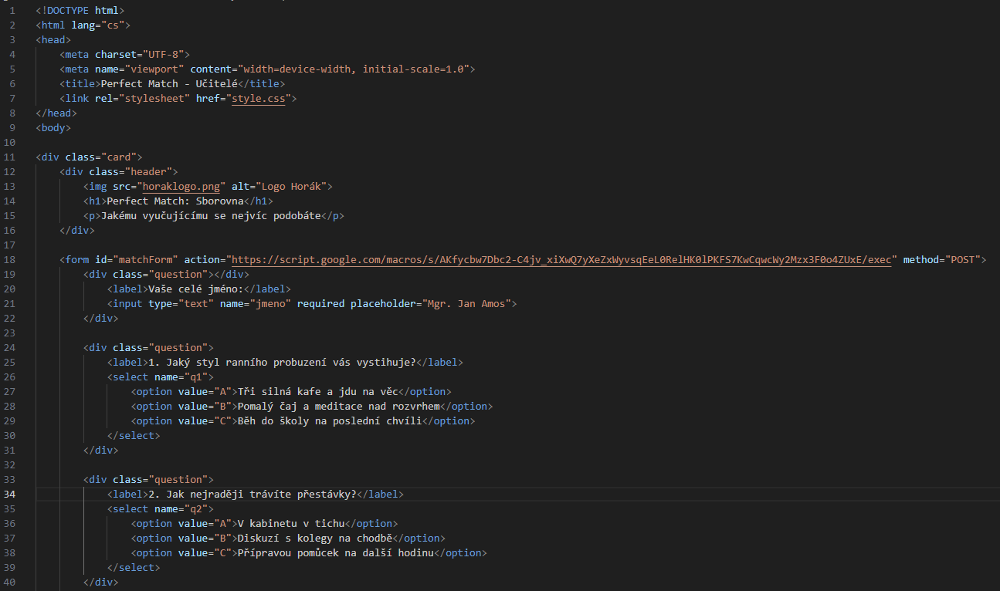

Celé to začalo, když mi spolužačka Johana Jumrová pověděla, že by bylo pěkné udělat dotazník na tzv. Perfect Match. Když jsem to slyšel, přišlo mi to jako malá legrácka. Pak jsem se dozvěděl, že to mám celé stihnout za jeden víkend. To už byl docela mazec.
Frontend: HTML a CSS
Začal jsem programováním webového dotazníku. Struktura otázek byla díky HTML poměrně jednoduchá. Zde je obrázek jedné z otázek:

Klíčovou věcí zde je class="question", což určí, že jde o otázku. Pomocí <option value="A"> se pak stanoví jednotlivé možnosti. value="A" je to, jak se mi odpověď uloží v backendu.
Zde je ještě další ukázka HTML kódu, tentokrát je v ní vidět boilerplate (to je úvodní část kódu)
Backend: Google Sheets a Apps Script
Vše se ukládá do Google Sheets. Použil jsem Apps Script od Googlu. Ten se stará o příjem dat a také o zobrazení závěrečné obrazovky s odkazem na tuto stránku. Takhle vypadá ten kód:

S tímto mi docela pomohl Gemini, jelikož jsem toto v životě nedělal a neměl jsem ponětí, jak na ty funkce.
Co bude dál?
Následně algoritmus porovná všechna data z tabulky a zjistí, kdo si je nejbližší. Algoritmus sem neuvádím, jelikož během psaní tohoto textu ho ještě nemám vymyšlený.
Pokud Vás zajímá ještě něco, neváhejte se optat!